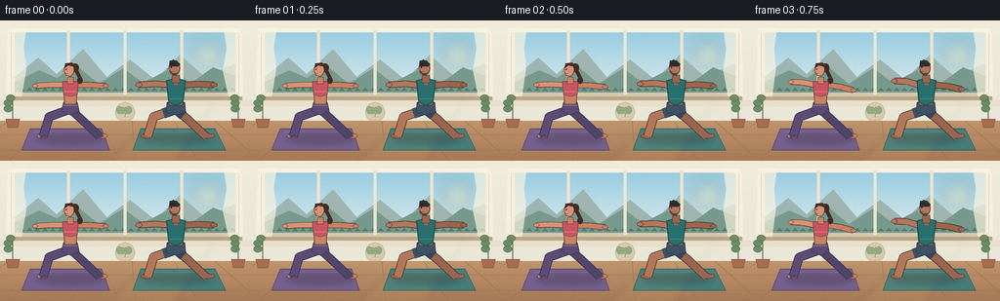
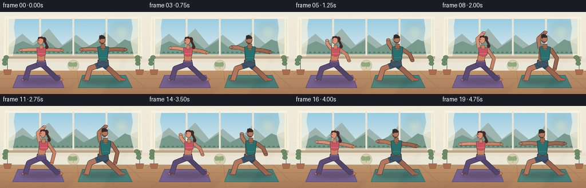

CODING AGENTS AS PIXEL WORLD MODELS
traex/GPT-5.6-Sol · instance_preservation_0030
点击播放 · 原生 RGB 像素
逐轮保存的候选
回放视频、检查图与代码变化。
每份候选均可单独播放。实际图片检查记录在下方工具轨迹中。
候选 01播放与检查图
点击播放 · 原生 RGB 像素


展开代码变化
--- 上一保存版本
+++ 本次保存版本
@@ -0,0 +1,239 @@
+from pathlib import Path
+import math
+import numpy as np
+from PIL import Image, ImageDraw, ImageFilter
+import artifact_io
+
+W, H, N = 256, 144, 20
+SS = 4
+S = SS
+rng = np.random.default_rng(30)
+
+def P(xy):
+ return tuple(int(round(v*S)) for v in xy)
+
+def poly(draw, pts, fill, outline=None, width=1):
+ q=[P(p) for p in pts]
+ draw.polygon(q, fill=fill)
+ if outline:
+ draw.line(q+[q[0]], fill=outline, width=max(1,int(width*S)), joint='curve')
+
+def ellipse(draw, box, fill, outline=None, width=1):
+ draw.ellipse(P(box), fill=fill, outline=outline, width=max(1,int(width*S)) if outline else 1)
+
+def line(draw, pts, fill, width, joint='curve'):
+ draw.line([P(p) for p in pts], fill=fill, width=max(1,int(width*S)), joint=joint)
+
+def limb(draw, pts, color, width, edge='#553c35', edge_extra=1.5):
+ line(draw, pts, edge, width+edge_extra)
+ line(draw, pts, color, width)
+ r=width/2
+ for x,y in pts[1:-1]:
+ ellipse(draw,(x-r,y-r,x+r,y+r),color)
+
+def lerp(a,b,t): return a+(b-a)*t
+
+def mixpt(a,b,t): return (lerp(a[0],b[0],t),lerp(a[1],b[1],t))
+
+def draw_background(frame_i):
+ # softly graded plaster and floor
+ yy=np.arange(H*S)[:,None]
+ xx=np.arange(W*S)[None,:]
+ arr=np.empty((H*S,W*S,3),dtype=np.uint8)
+ wall=np.stack([
+ 241-10*yy/(H*S), 236-7*yy/(H*S), 219-3*yy/(H*S)
+ ],axis=-1)
+ arr[:]=np.broadcast_to(wall,(H*S,W*S,3)).astype(np.uint8)
+ im=Image.fromarray(arr,'RGB').convert('RGBA')
+ d=ImageDraw.Draw(im)
+ # window recess and clear morning sky
+ d.rounded_rectangle(P((11,8,245,79)),radius=4*S,fill='#eee5d2',outline='#b8aa8f',width=1*S)
+ # sky gradient inside window
+ for y in range(12*S,75*S):
+ u=(y/S-12)/63
+ c=(int(153+68*u),int(205+30*u),int(226+10*u))
+ d.line([(15*S,y),(241*S,y)],fill=c,width=1)
+ # sun glow
+ glow=Image.new('RGBA',im.size,(0,0,0,0)); gd=ImageDraw.Draw(glow)
+ ellipse(gd,(195,18,230,53),(255,225,140,30))
+ ellipse(gd,(204,27,221,44),(255,238,172,115))
+ glow=glow.filter(ImageFilter.GaussianBlur(8*S)); im.alpha_composite(glow)
+ d=ImageDraw.Draw(im)
+ # distant hills with multiple atmospheric layers
+ poly(d,[(15,58),(39,38),(58,55),(85,29),(109,58),(133,40),(159,61),(184,35),(210,58),(241,44),(241,75),(15,75)],'#9fb5b0')
+ poly(d,[(15,63),(40,51),(58,59),(78,46),(101,65),(126,49),(146,64),(171,51),(196,64),(218,48),(241,57),(241,75),(15,75)],'#789a8d')
+ # suggestion of trees
+ for x in range(19,242,8):
+ h=3+((x*7)%7)
+ poly(d,[(x,72),(x+3,72-h),(x+6,72)],'#507c6b')
+ # window frames
+ d.rectangle(P((11,8,245,12)),fill='#f8f0df')
+ d.rectangle(P((11,74,245,80)),fill='#d7c9af')
+ for x in (70,128,186): d.rectangle(P((x-1.5,10,x+1.5,76)),fill='#eee4d0')
+ # translucent linen curtains
+ curtain=Image.new('RGBA',im.size,(0,0,0,0)); cd=ImageDraw.Draw(curtain)
+ sway=0.8*math.sin(frame_i*2*math.pi/N)
+ poly(cd,[(8,8),(27+sway,8),(24+sway,27),(27-sway,49),(22+sway,78),(6,78)],(250,243,223,175))
+ poly(cd,[(247,8),(229-sway,8),(232-sway,29),(228+sway,51),(234-sway,78),(249,78)],(250,243,223,175))
+ im.alpha_composite(curtain)
+ d=ImageDraw.Draw(im)
+ # sill and warm wall under it
+ d.rectangle(P((8,78,248,82)),fill='#b8a78b')
+ d.rectangle(P((0,82,256,88)),fill='#e9dfca')
+ # simple lotus wall plaque
+ ellipse(d,(118,84,138,104),'#d8cbae','#baa989',.7)
+ line(d,[(128,99),(128,91)],'#8b9f78',.8)
+ for dx in (-5,-2,2,5):
+ ellipse(d,(126+dx-2,89-abs(dx)*.25,130+dx,96),'#91aa80')
+ # wooden floor
+ poly(d,[(0,103),(256,103),(256,144),(0,144)],'#b98c63')
+ for y in range(104,145):
+ t=(y-104)/40
+ col=(int(190-24*t),int(148-26*t),int(107-20*t))
+ d.line([(0,y*S),(W*S,y*S)],fill=col,width=S)
+ # floorboards/perspective seams
+ for x0 in (9,49,91,135,178,220,253):
+ x1=128+(x0-128)*1.5
+ line(d,[(x0,103),(x1,144)],'#9f704f',.55)
+ for y in (117,133): line(d,[(0,y),(256,y)],'#a67552',.55)
+ # rugs/mats with perspective and subtle highlight
+ poly(d,[(31,111),(104,111),(112,133),(22,133)],'#75618f','#55486b',.8)
+ poly(d,[(144,111),(220,111),(231,133),(136,133)],'#467d79','#315c5a',.8)
+ line(d,[(34,114),(102,114)],'#8d79a6',.7)
+ line(d,[(147,114),(219,114)],'#5f9690',.7)
+ # potted plants at edges
+ def plant(cx,base,flip=1):
+ poly(d,[(cx-7,base-9),(cx+7,base-9),(cx+5,base),(cx-5,base)],'#a96c4d','#81523d',.7)
+ line(d,[(cx,base-9),(cx,base-32)],'#54735a',1)
+ ph=0.8*math.sin(frame_i*.28+cx)
+ for off,yy0 in [(-1,base-18),(0,base-24),(1,base-29)]:
+ side=flip*(1 if off>=0 else -1)
+ ellipse(d,(cx+side*(1+ph)-8,yy0-5,cx+side*(1+ph)+1,yy0+2),'#6c8c68','#527050',.5)
+ flip*=-1
+ plant(13,110,1); plant(244,110,-1)
+ # soft diagonal sunlight
+ beam=Image.new('RGBA',im.size,(0,0,0,0)); bd=ImageDraw.Draw(beam)
+ poly(bd,[(182,79),(222,79),(180,144),(112,144)],(255,226,157,16))
+ beam=beam.filter(ImageFilter.GaussianBlur(4*S)); im.alpha_composite(beam)
+ return im
+
+def draw_floor_shadow(im,cx):
+ sh=Image.new('RGBA',im.size,(0,0,0,0)); sd=ImageDraw.Draw(sh)
+ ellipse(sd,(cx-35,116,cx+35,127),(55,37,29,62))
+ sh=sh.filter(ImageFilter.GaussianBlur(3*S))
+ im.alpha_composite(sh)
+
+def draw_woman(im,cx,p,breath):
+ d=ImageDraw.Draw(im)
+ skin='#c98263'; skin_hi='#da9273'; edge='#583f3b'; hair='#442b2a'
+ hip=(cx,91+0.6*breath); scx=cx+4*p; sy=65-2*p+0.5*breath
+ # legs: stable wide Warrior-II base
+ front_k=(cx-22,99+1.1*p); front_a=(cx-28,119)
+ rear_k=(cx+13,103); rear_a=(cx+30,119)
+ # feet behind legs
+ ellipse(d,(front_a[0]-6,116,front_a[0]+5,121),skin,edge,.7)
+ ellipse(d,(rear_a[0]-3,116,rear_a[0]+8,121),skin,edge,.7)
+ # leggings limbs
+ limb(d,[hip,rear_k,rear_a],'#514569',7.4,'#3c354f',1.5)
+ limb(d,[hip,front_k,front_a],'#5c4c76',8,'#3c354f',1.5)
+ # ankle cuffs and foot toe strokes
+ line(d,[(front_a[0]-1,117),(front_a[0],120)],'#514569',6)
+ line(d,[(rear_a[0],117),(rear_a[0]+1,120)],'#514569',6)
+ line(d,[(front_a[0]-4,120),(front_a[0]+3,120)],'#7c4d3d',.45)
+ # pelvis/leggings waist
+ poly(d,[(cx-7,84),(cx+7,84),(cx+9,93),(cx,97),(cx-9,93)],'#5c4c76','#3c354f',.8)
+ line(d,[(cx-7,87),(cx+7,87)],'#8f789f',1.0)
+ # bare midriff and neck base
+ poly(d,[(scx-7,65),(scx+7,65),(cx+6,86),(cx-6,86)],skin,edge,.8)
+ # arms behind/around torso
+ ls=(scx-7,sy+1); rs=(scx+7,sy+1)
+ le=mixpt((cx-20,66),(cx-6,47),p); lh=mixpt((cx-36,67),(cx+6,36),p)
+ re=mixpt((cx+20,66),(cx+23,82),p); rh=mixpt((cx+36,67),(cx+18,101),p)
+ limb(d,[rs,re,rh],skin,5.0,edge,1.25)
+ limb(d,[ls,le,lh],skin_hi,5.0,edge,1.25)
+ ellipse(d,(lh[0]-3,lh[1]-2,lh[0]+3,lh[1]+2),skin_hi,edge,.55)
+ ellipse(d,(rh[0]-3,rh[1]-2,rh[0]+3,rh[1]+2),skin,edge,.55)
+ # crop top gives a distinct, readable torso
+ poly(d,[(scx-8,62.5),(scx+8,62.5),(scx+7,76),(scx,78),(scx-7,76)],'#c95562','#783e49',.9)
+ line(d,[(scx-7,73),(scx+7,73)],'#ed7b7f',.8)
+ # neck
+ poly(d,[(scx-3,58),(scx+3,58),(scx+3,65),(scx-3,65)],skin,edge,.6)
+ # ponytail behind head
+ head=(scx-1.2,51-2*p+0.3*breath)
+ ellipse(d,(head[0]+2,head[1]-7,head[0]+10,head[1]+2),hair,edge,.6)
+ line(d,[(head[0]+7,head[1]),(head[0]+12,head[1]+10)],hair,4)
+ ellipse(d,(head[0]+8,head[1]+7,head[0]+14,head[1]+14),hair,edge,.5)
+ # head, profile looking toward front knee (left)
+ ellipse(d,(head[0]-5.3,head[1]-7.4,head[0]+5.1,head[1]+6.4),skin_hi,edge,.8)
+ # hair cap and side sweep
+ poly(d,[(head[0]-5,head[1]-2),(head[0]-4,head[1]-7),(head[0]+3,head[1]-8),(head[0]+6,head[1]-3),(head[0]+3,head[1]-4),(head[0]-1,head[1]-5)],hair)
+ # nose, eye, calm mouth
+ poly(d,[(head[0]-5,head[1]-1),(head[0]-7,head[1]+1),(head[0]-4.8,head[1]+2)],skin_hi,edge,.45)
+ ellipse(d,(head[0]-3.8,head[1]-1.6,head[0]-2.5,head[1]-.3),'#302624')
+ line(d,[(head[0]-4,head[1]+3),(head[0]-1.5,head[1]+3.2)],'#7f3f43',.5)
+
+def draw_man(im,cx,p,breath):
+ d=ImageDraw.Draw(im)
+ skin='#9c654d'; skin_hi='#b4775b'; edge='#493935'; hair='#302b2a'
+ hip=(cx,91+0.5*breath); scx=cx+4.5*p; sy=64-2*p+0.5*breath
+ front_k=(cx-23,99+1.1*p); front_a=(cx-29,119)
+ rear_k=(cx+14,103); rear_a=(cx+31,119)
+ # legs as skin first
+ ellipse(d,(front_a[0]-7,116,front_a[0]+5,121),skin,edge,.7)
+ ellipse(d,(rear_a[0]-3,116,rear_a[0]+9,121),skin,edge,.7)
+ limb(d,[hip,rear_k,rear_a],skin,7.6,edge,1.6)
+ limb(d,[hip,front_k,front_a],skin_hi,8.0,edge,1.6)
+ # shorts over upper legs, carefully separated
+ limb(d,[hip,mixpt(hip,rear_k,.53)],'#34485b',9.2,'#293846',1.1)
+ limb(d,[hip,mixpt(hip,front_k,.55)],'#3d5368',9.5,'#293846',1.1)
+ poly(d,[(cx-9,84),(cx+9,84),(cx+10,94),(cx,97),(cx-10,94)],'#3d5368','#293846',.9)
+ line(d,[(cx-8,87),(cx+8,87)],'#6b8295',.9)
+ # torso under shirt
+ poly(d,[(scx-10,62),(scx+10,62),(cx+7,87),(cx-7,87)],skin,edge,.8)
+ ls=(scx-9,sy+2); rs=(scx+9,sy+2)
+ le=mixpt((cx-21,65),(cx-7,46),p); lh=mixpt((cx-38,66),(cx+7,34),p)
+ re=mixpt((cx+22,65),(cx+25,82),p); rh=mixpt((cx+39,66),(cx+20,102),p)
+ limb(d,[rs,re,rh],skin,5.7,edge,1.35)
+ limb(d,[ls,le,lh],skin_hi,5.7,edge,1.35)
+ ellipse(d,(lh[0]-3.4,lh[1]-2.2,lh[0]+3.4,lh[1]+2.2),skin_hi,edge,.55)
+ ellipse(d,(rh[0]-3.4,rh[1]-2.2,rh[0]+3.4,rh[1]+2.2),skin,edge,.55)
+ # tank top, broad shoulders
+ poly(d,[(scx-9.5,61.5),(scx-4,60),(scx-2,65),(scx+2,65),(scx+4,60),(scx+9.5,61.5),(scx+7,84),(cx,87),(scx-7,84)],'#28716f','#244d50',1)
+ poly(d,[(scx-3,61),(scx+3,61),(scx+2,66),(scx-2,66)],skin)
+ line(d,[(scx-7,80),(scx+7,80)],'#4d9590',.7)
+ # neck and head
+ poly(d,[(scx-3.5,56),(scx+3.5,56),(scx+4,64),(scx-4,64)],skin,edge,.65)
+ head=(scx-1.5,49-2*p+0.3*breath)
+ ellipse(d,(head[0]-5.7,head[1]-7.5,head[0]+5.7,head[1]+7),skin_hi,edge,.85)
+ # short textured hair cap
+ poly(d,[(head[0]-5.5,head[1]-2),(head[0]-5,head[1]-7),(head[0]-2,head[1]-8.5),(head[0]+2,head[1]-8),(head[0]+6,head[1]-4),(head[0]+4,head[1]-2)],hair)
+ for dx,dy in [(-4,-7),(-1,-8),(2,-7),(4,-5)]: ellipse(d,(head[0]+dx-1,head[1]+dy-1,head[0]+dx+1,head[1]+dy+1),'#3b3431')
+ # nose and eye, trimmed beard
+ poly(d,[(head[0]-5,head[1]-1),(head[0]-7.2,head[1]+1),(head[0]-5,head[1]+2)],skin_hi,edge,.45)
+ ellipse(d,(head[0]-4,head[1]-1.8,head[0]-2.6,head[1]-.3),'#282523')
+ poly(d,[(head[0]-5,head[1]+2),(head[0]-3,head[1]+6),(head[0]+2,head[1]+6.5),(head[0]+5,head[1]+2),(head[0]+3,head[1]+5),(head[0]-2,head[1]+5)],'#57413a')
+ line(d,[(head[0]-4,head[1]+3),(head[0]-1.3,head[1]+3.3)],'#3f2928',.45)
+
+def make_frame(i):
+ im=draw_background(i)
+ # ground shadows before bodies
+ draw_floor_shadow(im,72); draw_floor_shadow(im,181)
+ # coherent 5-second Warrior II -> Reverse Warrior -> Warrior II flow
+ u=i/(N-1)
+ p=math.sin(math.pi*u)**2
+ p=3*p*p-2*p*p*p # eased at both held poses
+ breath=math.sin(2*math.pi*(u*1.15))*0.65
+ draw_woman(im,72,p,breath)
+ draw_man(im,180,min(1,p*.97),math.sin(2*math.pi*(u*1.15)+.18)*.6)
+ # downsample gives clean, illustrated antialiasing
+ rgb=im.convert('RGB').resize((W,H),Image.Resampling.LANCZOS)
+ a=np.asarray(rgb).astype(np.int16)
+ # very fine deterministic film grain prevents flat digital bands
+ local=np.random.default_rng(3000+i)
+ noise=local.normal(0,0.7,a.shape[:2])[:,:,None]
+ a=np.clip(a+noise,0,255).astype(np.uint8)
+ return a
+
+frames=np.stack([make_frame(i) for i in range(N)],axis=0)
+artifact_io.save(frames,Path(__file__).resolve().parent)
+print('saved',frames.shape,frames.dtype)
可观测工具轨迹
实际执行的命令与返回图片。
命令 1exit 0
/bin/bash -lc "cat prompt.txt && printf '\\n--- GENERATION_RULES.md ---\\n' && cat GENERATION_RULES.md"
命令 2exit 0
/bin/bash -lc "cat task_spec.json && printf '\\n--- FILES ---\\n' && find . -maxdepth 2 -type f -printf '%p\\n' | sort"
命令 3exit 0
/bin/bash -lc 'cat artifact_io.py'
命令 4exit 0
/bin/bash -lc "cat > generate.py <<'PY'
from pathlib import Path
import math
import numpy as np
from PIL import Image, ImageDraw, ImageFilter
import artifact_io
W, H, N = 256, 144, 20
SS = 4
S = SS
rng = np.random.default_rng(30)
def P(xy):
return tuple(int(round(v*S)) for v in xy)
def poly(draw, pts, fill, outline=None, width=1):
q=[P(p) for p in pts]
draw.polygon(q, fill=fill)
if outline:
draw.line(q+[q[0]], fill=outline, width=max(1,int(width*S)), joint='curve')
def ellipse(draw, box, fill, outline=None, width=1):
draw.ellipse(P(box), fill=fill, outline=outline, width=max(1,int(width*S)) if outline else 1)
def line(draw, pts, fill, width, joint='curve'):
draw.line([P(p) for p in pts], fill=fill, width=max(1,int(width*S)), joint=joint)
def limb(draw, pts, color, width, edge='#553c35', edge_extra=1.5):
line(draw, pts, edge, width+edge_extra)
line(draw, pts, color, width)
r=width/2
for x,y in pts[1:-1]:
ellipse(draw,(x-r,y-r,x+r,y+r),color)
def lerp(a,b,t): return a+(b-a)*t
def mixpt(a,b,t): return (lerp(a[0],b[0],t),lerp(a[1],b[1],t))
def draw_background(frame_i):
# softly graded plaster and floor
yy=np.arange(H*S)[:,None]
xx=np.arange(W*S)[None,:]
arr=np.empty((H*S,W*S,3),dtype=np.uint8)
wall=np.stack([
241-10*yy/(H*S), 236-7*yy/(H*S), 219-3*yy/(H*S)
],axis=-1)
arr[:]=np.broadcast_to(wall,(H*S,W*S,3)).astype(np.uint8)
im=Image.fromarray(arr,'RGB').convert('RGBA')
d=ImageDraw.Draw(im)
# window recess and clear morning sky
d.rounded_rectangle(P((11,8,245,79)),radius=4*S,fill='#eee5d2',outline='#b8aa8f',width=1*S)
# sky gradient inside window
for y in range(12*S,75*S):
u=(y/S-12)/63
c=(int(153+68*u),int(205+30*u),int(226+10*u))
d.line([(15*S,y),(241*S,y)],fill=c,width=1)
# sun glow
glow=Image.new('RGBA',im.size,(0,0,0,0)); gd=ImageDraw.Draw(glow)
ellipse(gd,(195,18,230,53),(255,225,140,30))
ellipse(gd,(204,27,221,44),(255,238,172,115))
glow=glow.filter(ImageFilter.GaussianBlur(8*S)); im.alpha_composite(glow)
d=ImageDraw.Draw(im)
# distant hills with multiple atmospheric layers
poly(d,[(15,58),(39,38),(58,55),(85,29),(109,58),(133,40),(159,61),(184,35),(210,58),(241,44),(241,75),(15,75)],'#9fb5b0')
poly(d,[(15,63),(40,51),(58,59),(78,46),(101,65),(126,49),(146,64),(171,51),(196,64),(218,48),(241,57),(241,75),(15,75)],'#789a8d')
# suggestion of trees
for x in range(19,242,8):
h=3+((x*7)%7)
poly(d,[(x,72),(x+3,72-h),(x+6,72)],'#507c6b')
# window frames
d.rectangle(P((11,8,245,12)),fill='#f8f0df')
d.rectangle(P((11,74,245,80)),fill='#d7c9af')
for x in (70,128,186): d.rectangle(P((x-1.5,10,x+1.5,76)),fill='#eee4d0')
# translucent linen curtains
curtain=Image.new('RGBA',im.size,(0,0,0,0)); cd=ImageDraw.Draw(curtain)
sway=0.8*math.sin(frame_i*2*math.pi/N)
poly(cd,[(8,8),(27+sway,8),(24+sway,27),(27-sway,49),(22+sway,78),(6,78)],(250,243,223,175))
poly(cd,[(247,8),(229-sway,8),(232-sway,29),(228+sway,51),(234-sway,78),(249,78)],(250,243,223,175))
im.alpha_composite(curtain)
d=ImageDraw.Draw(im)
# sill and warm wall under it
d.rectangle(P((8,78,248,82)),fill='#b8a78b')
d.rectangle(P((0,82,256,88)),fill='#e9dfca')
# simple lotus wall plaque
ellipse(d,(118,84,138,104),'#d8cbae','#baa989',.7)
line(d,[(128,99),(128,91)],'#8b9f78',.8)
for dx in (-5,-2,2,5):
ellipse(d,(126+dx-2,89-abs(dx)*.25,130+dx,96),'#91aa80')
# wooden floor
poly(d,[(0,103),(256,103),(256,144),(0,144)],'#b98c63')
for y in range(104,145):
t=(y-104)/40
col=(int(190-24*t),int(148-26*t),int(107-20*t))
d.line([(0,y*S),(W*S,y*S)],fill=col,width=S)
# floorboards/perspective seams
for x0 in (9,49,91,135,178,220,253):
x1=128+(x0-128)*1.5
line(d,[(x0,103),(x1,144)],'#9f704f',.55)
for y in (117,133): line(d,[(0,y),(256,y)],'#a67552',.55)
# rugs/mats with perspective and subtle highlight
poly(d,[(31,111),(104,111),(112,133),(22,133)],'#75618f','#55486b',.8)
poly(d,[(144,111),(220,111),(231,133),(136,133)],'#467d79','#315c5a',.8)
line(d,[(34,114),(102,114)],'#8d79a6',.7)
line(d,[(147,114),(219,114)],'#5f9690',.7)
# potted plants at edges
def plant(cx,base,flip=1):
poly(d,[(cx-7,base-9),(cx+7,base-9),(cx+5,base),(cx-5,base)],'#a96c4d','#81523d',.7)
line(d,[(cx,base-9),(cx,base-32)],'#54735a',1)
ph=0.8*math.sin(frame_i*.28+cx)
for off,yy0 in [(-1,base-18),(0,base-24),(1,base-29)]:
side=flip*(1 if off>=0 else -1)
ellipse(d,(cx+side*(1+ph)-8,yy0-5,cx+side*(1+ph)+1,yy0+2),'#6c8c68','#527050',.5)
flip*=-1
plant(13,110,1); plant(244,110,-1)
# soft diagonal sunlight
beam=Image.new('RGBA',im.size,(0,0,0,0)); bd=ImageDraw.Draw(beam)
poly(bd,[(182,79),(222,79),(180,144),(112,144)],(255,226,157,16))
beam=beam.filter(ImageFilter.GaussianBlur(4*S)); im.alpha_composite(beam)
return im
def draw_floor_shadow(im,cx):
sh=Image.new('RGBA',im.size,(0,0,0,0)); sd=ImageDraw.Draw(sh)
ellipse(sd,(cx-35,116,cx+35,127),(55,37,29,62))
sh=sh.filter(ImageFilter.GaussianBlur(3*S))
im.alpha_composite(sh)
def draw_woman(im,cx,p,breath):
d=ImageDraw.Draw(im)
skin='#c98263'; skin_hi='#da9273'; edge='#583f3b'; hair='#442b2a'
hip=(cx,91+0.6*breath); scx=cx+4*p; sy=65-2*p+0.5*breath
# legs: stable wide Warrior-II base
front_k=(cx-22,99+1.1*p); front_a=(cx-28,119)
rear_k=(cx+13,103); rear_a=(cx+30,119)
# feet behind legs
ellipse(d,(front_a[0]-6,116,front_a[0]+5,121),skin,edge,.7)
ellipse(d,(rear_a[0]-3,116,rear_a[0]+8,121),skin,edge,.7)
# leggings limbs
limb(d,[hip,rear_k,rear_a],'#514569',7.4,'#3c354f',1.5)
limb(d,[hip,front_k,front_a],'#5c4c76',8,'#3c354f',1.5)
# ankle cuffs and foot toe strokes
line(d,[(front_a[0]-1,117),(front_a[0],120)],'#514569',6)
line(d,[(rear_a[0],117),(rear_a[0]+1,120)],'#514569',6)
line(d,[(front_a[0]-4,120),(front_a[0]+3,120)],'#7c4d3d',.45)
# pelvis/leggings waist
poly(d,[(cx-7,84),(cx+7,84),(cx+9,93),(cx,97),(cx-9,93)],'#5c4c76','#3c354f',.8)
line(d,[(cx-7,87),(cx+7,87)],'#8f789f',1.0)
# bare midriff and neck base
poly(d,[(scx-7,65),(scx+7,65),(cx+6,86),(cx-6,86)],skin,edge,.8)
# arms behind/around torso
ls=(scx-7,sy+1); rs=(scx+7,sy+1)
le=mixpt((cx-20,66),(cx-6,47),p); lh=mixpt((cx-36,67),(cx+6,36),p)
re=mixpt((cx+20,66),(cx+23,82),p); rh=mixpt((cx+36,67),(cx+18,101),p)
limb(d,[rs,re,rh],skin,5.0,edge,1.25)
limb(d,[ls,le,lh],skin_hi,5.0,edge,1.25)
ellipse(d,(lh[0]-3,lh[1]-2,lh[0]+3,lh[1]+2),skin_hi,edge,.55)
ellipse(d,(rh[0]-3,rh[1]-2,rh[0]+3,rh[1]+2),skin,edge,.55)
# crop top gives a distinct, readable torso
poly(d,[(scx-8,62.5),(scx+8,62.5),(scx+7,76),(scx,78),(scx-7,76)],'#c95562','#783e49',.9)
line(d,[(scx-7,73),(scx+7,73)],'#ed7b7f',.8)
# neck
poly(d,[(scx-3,58),(scx+3,58),(scx+3,65),(scx-3,65)],skin,edge,.6)
# ponytail behind head
head=(scx-1.2,51-2*p+0.3*breath)
ellipse(d,(head[0]+2,head[1]-7,head[0]+10,head[1]+2),hair,edge,.6)
line(d,[(head[0]+7,head[1]),(head[0]+12,head[1]+10)],hair,4)
ellipse(d,(head[0]+8,head[1]+7,head[0]+14,head[1]+14),hair,edge,.5)
# head, profile looking toward front knee (left)
ellipse(d,(head[0]-5.3,head[1]-7.4,head[0]+5.1,head[1]+6.4),skin_hi,edge,.8)
# hair cap and side sweep
poly(d,[(head[0]-5,head[1]-2),(head[0]-4,head[1]-7),(head[0]+3,head[1]-8),(head[0]+6,head[1]-3),(head[0]+3,head[1]-4),(head[0]-1,head[1]-5)],hair)
# nose, eye, calm mouth
poly(d,[(head[0]-5,head[1]-1),(head[0]-7,head[1]+1),(head[0]-4.8,head[1]+2)],skin_hi,edge,.45)
ellipse(d,(head[0]-3.8,head[1]-1.6,head[0]-2.5,head[1]-.3),'#302624')
line(d,[(head[0]-4,head[1]+3),(head[0]-1.5,head[1]+3.2)],'#7f3f43',.5)
def draw_man(im,cx,p,breath):
d=ImageDraw.Draw(im)
skin='#9c654d'; skin_hi='#b4775b'; edge='#493935'; hair='#302b2a'
hip=(cx,91+0.5*breath); scx=cx+4.5*p; sy=64-2*p+0.5*breath
front_k=(cx-23,99+1.1*p); front_a=(cx-29,119)
rear_k=(cx+14,103); rear_a=(cx+31,119)
# legs as skin first
ellipse(d,(front_a[0]-7,116,front_a[0]+5,121),skin,edge,.7)
ellipse(d,(rear_a[0]-3,116,rear_a[0]+9,121),skin,edge,.7)
limb(d,[hip,rear_k,rear_a],skin,7.6,edge,1.6)
limb(d,[hip,front_k,front_a],skin_hi,8.0,edge,1.6)
# shorts over upper legs, carefully separated
limb(d,[hip,mixpt(hip,rear_k,.53)],'#34485b',9.2,'#293846',1.1)
limb(d,[hip,mixpt(hip,front_k,.55)],'#3d5368',9.5,'#293846',1.1)
poly(d,[(cx-9,84),(cx+9,84),(cx+10,94),(cx,97),(cx-10,94)],'#3d5368','#293846',.9)
line(d,[(cx-8,87),(cx+8,87)],'#6b8295',.9)
# torso under shirt
poly(d,[(scx-10,62),(scx+10,62),(cx+7,87),(cx-7,87)],skin,edge,.8)
ls=(scx-9,sy+2); rs=(scx+9,sy+2)
le=mixpt((cx-21,65),(cx-7,46),p); lh=mixpt((cx-38,66),(cx+7,34),p)
re=mixpt((cx+22,65),(cx+25,82),p); rh=mixpt((cx+39,66),(cx+20,102),p)
limb(d,[rs,re,rh],skin,5.7,edge,1.35)
limb(d,[ls,le,lh],skin_hi,5.7,edge,1.35)
ellipse(d,(lh[0]-3.4,lh[1]-2.2,lh[0]+3.4,lh[1]+2.2),skin_hi,edge,.55)
ellipse(d,(rh[0]-3.4,rh[1]-2.2,rh[0]+3.4,rh[1]+2.2),skin,edge,.55)
# tank top, broad shoulders
poly(d,[(scx-9.5,61.5),(scx-4,60),(scx-2,65),(scx+2,65),(scx+4,60),(scx+9.5,61.5),(scx+7,84),(cx,87),(scx-7,84)],'#28716f','#244d50',1)
poly(d,[(scx-3,61),(scx+3,61),(scx+2,66),(scx-2,66)],skin)
line(d,[(scx-7,80),(scx+7,80)],'#4d9590',.7)
# neck and head
poly(d,[(scx-3.5,56),(scx+3.5,56),(scx+4,64),(scx-4,64)],skin,edge,.65)
head=(scx-1.5,49-2*p+0.3*breath)
ellipse(d,(head[0]-5.7,head[1]-7.5,head[0]+5.7,head[1]+7),skin_hi,edge,.85)
# short textured hair cap
poly(d,[(head[0]-5.5,head[1]-2),(head[0]-5,head[1]-7),(head[0]-2,head[1]-8.5),(head[0]+2,head[1]-8),(head[0]+6,head[1]-4),(head[0]+4,head[1]-2)],hair)
for dx,dy in [(-4,-7),(-1,-8),(2,-7),(4,-5)]: ellipse(d,(head[0]+dx-1,head[1]+dy-1,head[0]+dx+1,head[1]+dy+1),'#3b3431')
# nose and eye, trimmed beard
poly(d,[(head[0]-5,head[1]-1),(head[0]-7.2,head[1]+1),(head[0]-5,head[1]+2)],skin_hi,edge,.45)
ellipse(d,(head[0]-4,head[1]-1.8,head[0]-2.6,head[1]-.3),'#282523')
poly(d,[(head[0]-5,head[1]+2),(head[0]-3,head[1]+6),(head[0]+2,head[1]+6.5),(head[0]+5,head[1]+2),(head[0]+3,head[1]+5),(head[0]-2,head[1]+5)],'#57413a')
line(d,[(head[0]-4,head[1]+3),(head[0]-1.3,head[1]+3.3)],'#3f2928',.45)
def make_frame(i):
im=draw_background(i)
# ground shadows before bodies
draw_floor_shadow(im,72); draw_floor_shadow(im,181)
# coherent 5-second Warrior II -> Reverse Warrior -> Warrior II flow
u=i/(N-1)
p=math.sin(math.pi*u)**2
p=3*p*p-2*p*p*p # eased at both held poses
breath=math.sin(2*math.pi*(u*1.15))*0.65
draw_woman(im,72,p,breath)
draw_man(im,180,min(1,p*.97),math.sin(2*math.pi*(u*1.15)+.18)*.6)
# downsample gives clean, illustrated antialiasing
rgb=im.convert('RGB').resize((W,H),Image.Resampling.LANCZOS)
a=np.asarray(rgb).astype(np.int16)
# very fine deterministic film grain prevents flat digital bands
local=np.random.default_rng(3000+i)
noise=local.normal(0,0.7,a.shape[:2])[:,:,None]
a=np.clip(a+noise,0,255).astype(np.uint8)
return a
frames=np.stack([make_frame(i) for i in range(N)],axis=0)
artifact_io.save(frames,Path(__file__).resolve().parent)
print('saved',frames.shape,frames.dtype)
PY
python generate.py"命令 5exit 0
/bin/bash -lc "python - <<'PY'
import numpy as np
from PIL import Image
z=np.load('pixels.npz')['pixels']
print('pixels',z.shape,z.dtype)
print('frames',len(list(__import__('pathlib').Path('frames').glob('*.png'))))
print('inspection',Image.open('inspection.png').size)
PY"命令 6exit 0
/bin/bash -lc 'ls -lh generate.py pixels.npz index.html inspection.png transition_check.png frames/00.png frames/19.png'
视觉工具实际返回图片 1

保存候选 1 份；完成命令 6 次；可验证图片返回 1 张。原始 API 响应与完整日志保留在本地。